Currently JChem enables the searching of Markush structures containing homology groups only with specific molecule queries (with no query features). Homology groups are supported on the target and on the query side the latter only for non-markush targets. Properties can also be specified for the groups.
Read the user's guide about homology groups and property editing in MarvinSketch.
The homology groups in Markush structures are represented by pseudo atoms labeled with the common chemical annotation of the groups. Most groups have alias names which allow shorter names. The names are case insensitive, spaces might be inserted. The pseudo atoms can be most easily drawn in Marvin Sketch using the Homology Groups template group.
There are two major types of homology groups regarding their way of definition:The "Example" column shows complete structures representing the homology groups.
Table 1. Built-in groups
| Group name (alias names) | Compulsory | Optional | Incomplete case | Example |
|---|---|---|---|---|
| Alkyl (chk) |
- minimum of one carbon atom - only carbon and hydrogen atoms - single bonds - no ring bonds |
connection point at arbitrary position(s) | same requirements | 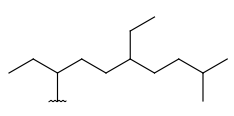 |
| Alkenyl (che) |
- at least one double bond - minimum of 2 carbon atoms - otherwise same as for Alkyl |
same as above | same as at compulsory, but the matching structure does not need to have any double bond | 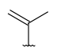 |
| Alkynyl (chy) |
- at least one triple bond - minimum of 2 carbon atoms - otherwise same as for Alkyl |
same as above, double bond | same as at compulsory, but the matching structure does not need to have any triple bond | 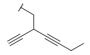 |
| CarbonTree (acyclicCarbon) |
Any connected acyclic carbon structure. | - | - | 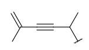 |
| Carboalicyclyl (cyc, cycloalkyl) |
- monocyclic or fused aliphatic rings - only carbon and hydrogen atoms - no substitution by (saturated) alkyl chains |
- double or triple bonds in the ring but not aromatic - several connection points on the rings |
- any carbon structure without aromatic bonds - the substituting alkyl chain can be unsaturated |
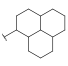 |
| Carboaryl (ary, aryl) |
- monocyclic or fused rings - among these rings at least one should be aromatic - only carbon and hydrogen atoms |
- double bonds/triple bonds in the aliphatic rings - several connection points but all must be on an aromatic ring (can't have external connection on an aliphatic ring) |
- similar to carboalicyclyl but the atoms can have aromatic bonds: - any carbon structure where the external connection is on an atom that has aromatic bond or has only one bond. - the matching structure doesn't need to have a ring. |
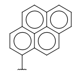 |
| Heteromonoalicyclyl (het, heterocycle, heterocyclyl, AliphaticHeterocyclyl) |
- monocyclic, aliphatic ring with at least one hetero atom, carbon atom is also required |
same as carboalicyclyl | similar to carboalicyclyl but here hetero atoms are accepted as well, which means any structure without aromatic bonds | 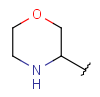 |
| Heteromonoaryl (hea, Heteroaryl) |
- similar to aryl but the monocyclic aromatic ring should contain at least one
hetero atom, carbon atom is also required - no fused rings |
same as aryl | Similar to aryl but here hetero atoms are accepted as well. Condition for the externally connecting atom holds as in case of aryl. | 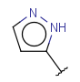 |
| FusedHetero, fusedHeterocyclyl (hef) |
- Fused ring system having at least one hetero atom, carbon atom is also required | same as aryl, but the connection point can be on an aliphatic ring as well | Any structure having hetero, carbon and hydrogen atoms, with any bonds. | 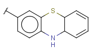 |
| Cyclyl (anycyclyl, anyring) |
Any kind of ring regardless fuseness, aromaticity and hetero-carbo nature. | - | - | 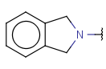 |
| RingSegment - |
A part of a ring where every atom has only 2 ring connections. Non ring connections are allowed. The group does not represent a whole ring. | - | - | 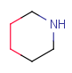 |
| Unknown group (unk) |
- | Any structure. Unknown structures are enumerated as the union of all other homology groups. | - | - |
| Metal (mx) |
Any metal | - | - | U, K, Fe, Na, Ni, Al, ... |
| AlkaliMetal (amx) |
Alkali and alkaline earth metals | - | - | Na, K, Ca, Mg, ... |
| OtherMetal (a35) |
Group IIIa-Va metals | - | - | Al, Ga, ... |
| TransitionMetal (trm) |
Transition metals excluding lanthanum | - | - | Fe, Ni, Zn, Co, Hg, W, ... |
| Lanthanide (lan) |
Lanthanides (including lanthanum) | - | - | Nd, Ce, Pr, ... |
| Actinide (act) |
Actinides (including actinium) | - | - | U, Th, Pa, ... |
These homology groups are predefined and are represented by R-group definitions. During search the pseudo atoms are translated to the corresponding R-group definitions.
The group definitions are customizable, the user can override them or can make new definitions as well. Group names are treated case insensitive, but in case sensitive file systems the definition files should be lowercase.
User-defined groups readily available in the system are the following:
Protecting groups' definition file contains several definitions, each for protecting different functional groups. The protected functional group is defined by the neighborhood of the R-atom. When the R-atom has the same neighborhood as the "protecting" pseudo atom, then the group is replaced by the R-atom.
The conversion processes the group definitions in their order in the file. This means that more specific environments should be placed earlier. For example, a carboxyl protecting group definition should precede an alcohol definition, otherwise the alcohol definitions will be applied instead. Currently they are located in the following order:
Currently the system can't handle protecting groups having more than one
attachment point, or groups where the heavy atoms of the functional group
should be changed by the substitution.
The readily available definitions contain amine, carboxyl and hydroxyl
protecting groups.
JChem's group name: protecting
alias names: prt
Some examples with different functional groups protected can be found on Table 2.
Table 2. Protecting group examples
| Protecting group | Represented examples | ||
| 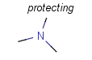 | 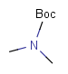 | 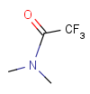 | 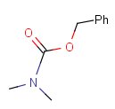 |
| 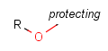 | 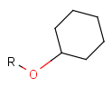 | 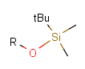 | 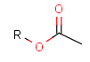 |
| 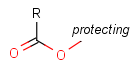 | 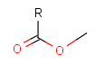 | 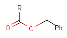 | 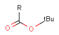 |
Residue left after removal of one or more OH groups from an acid. Currently it behaves
as simple pseudo atoms: can only be matched by itself and is not enumerated. This behavior
complies with the Thomson-Reuters/Questel acyl group handling.
JChem's group name: acyl
alias names: acy
The union of all other homology groups except acyl, unknown and protecting. This union is represented
by cyclyl, carbonTree, metal and halogen groups. If the group occurs
in a ring then represents a ringSegment homology group.
JChem's group name: any
alias names: xx
Currently there is one regulating option: 'completeHG', which specifies if the
part of the query side structure matching on the given group should represent an
entire homology group or if substructures are also accepted. Of course in the incomplete
case an entire structure can also match on the given homology group.
For example, if completeHG is set to true (default) an alkyl chain can't match on a cycloalkyl
group, only a ring (system). The detailed behavior is found at the definition of the groups.
And example is shown on Table 3.
Table 3. Complete and incomplete structures of homology groups
| target | query | hit | |
| completeHG:y | completeHG:n | ||
| 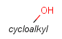 | 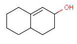 | ||
| 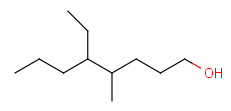 | |||
For the built-in types, example R-group definitions specify the enumerable library, with the same technology as user-defined groups. These structures are characteristic to the homology group and encompass simple and large structures as well. The group definitions are customizable.
We have to emphasize, that these definitions are only used for enumeration and do not affect searching. As noted earlier, arbitrary structures fulfilling the requirements for the homology group will match such a target.
The enumeration definitions contain as default two attachment points. After enumeration these are the atoms which connect to the first two neighbors of the group. If the enumerated homology pseudo atom has more than two connections then further attachment points are added. These are put on atoms that have free valence and comply the requirements for externally connecting atoms of the given group. E.g. for aryl only aromatic ring atoms can be connection points of the aryl. The atoms of the definition are investigated in the order of their numbering. If a definition does not have the sufficient number of such atoms, then it is rejected. In case all the definitions of a homology atoms are rejected an exception is thrown showing that the given homology group does not have any suitable enumeration definition.
The enumeration of user-defined homology groups use the same (customizable) R-group definitions as searching. The user-defined homology atom should have the same number of connections as are shown in the definitions.
The definition files are in lower case, customized file names have to be in
lower case as well.
Overriding of these definition occurs by copying the definition from the
jar file to the user (.)chemaxon directory into the subdirectory: homology/user_def_groups
(or homology/enumeration_only for built-in groups).
Overriding these files will affect searching/enumeration in case of
user-defined groups and the enumeration in case of built-in groups.
Adding a new group can be achieved by creating/copying a new mrv file containing an R atom
and the definitions of the group. The name of the new group is specified by
the name of the file.
The overridden definition or the newly added group can also be dependent on the neighborhood
(context-sensitive) as in the case of protecting groups.
If the user would like to have different definitions for searching and enumeration of a
user-defined group, then a separate file should be specified in the "enumeration_only" dictionary.
In this case the content of the "user_def_groups" will be used during searching and
the content of the "enumeration_only" for enumeration.
An example for overriding an amino protecting group definition may consist of the following
steps:
If a definition is overridden it comes into effect immediately, however the addition of a new group requires a restart of the Java Virtual Machine.
Table 4. Overriding amino protecting group definitions.
| overwriting the definition | sample markush file | enumerations |
| 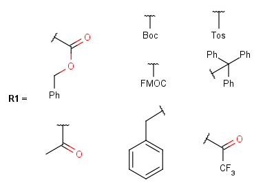 | 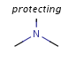 | 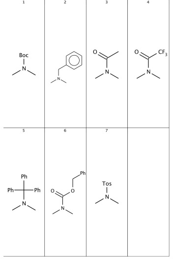 |
Some homology groups have important properties. You might want to specify if the alkyl chain is branched, or any deuterium atoms are present. The homology groups have a special property editing dialog where you can set the different properties. They include the followings (with the group to which it may be applied):
Read the user's guide about homology groups and property editing in MarvinSketch.